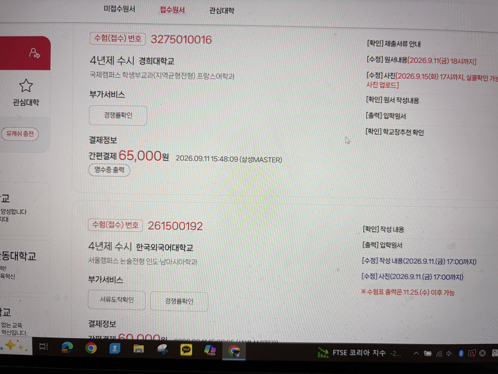
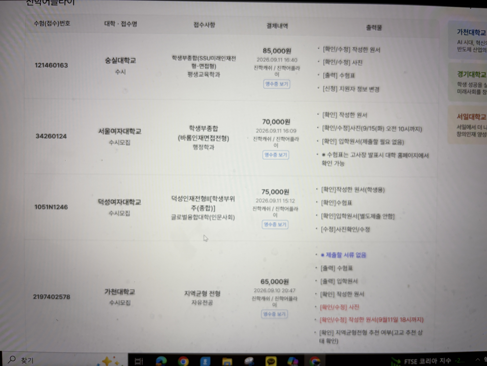

121460163 (85,000원 결제 완료)34260124 (70,000원 결제 완료)1051N1246 (75,000원 결제 완료)2197402578 (65,000원 결제 완료)3275010016 (65,000원 결제 완료)261500192 (60,000원 결제 완료)| 대학명 | 전형명 | 모집단위 | 모집인원 | 지원인원 | 실시간 경쟁률 | 전년도 경쟁률 | 마지막 발표 시간 | 접수 마감일 | 접수 상태 | 수험(접수)번호 |
|---|---|---|---|---|---|---|---|---|---|---|
| 숭실대학교 | SSU미래인재(학종) | 평생교육학과 | 9명 | 170명 | 18.89 : 1 | [SSU미래인재] 9명 (12.8:1) | 9. 11(금) 14:00~15:00 | 9. 11(금) 18:00 (마감 임박) | ✅ 결제 완료 | 121460163 |
| 서울여자대학교 | 바롬인재면접(학종) | 행정학과 | 8명 | 97명 | 12.13 : 1 | [바롬인재] 8명 (12.9:1) | 9. 11(금) 14:00~15:00 | 9. 11(금) 18:00 (마감 임박) | ✅ 결제 완료 | 34260124 |
| 덕성여자대학교 | 덕성인재Ⅱ | 글로벌융합대학 | 74명 | 1,192명 | 16.11 : 1 | [덕성인재Ⅱ] 64명 (13.6:1) | 9. 11(금) 14:00~15:00 | 9. 11(금) 18:00 (마감 임박) | ✅ 결제 완료 | 1051N1246 |
| 가천대학교 | 지역균형(교과) | 자유전공 | 321명 | 4,014명 | 12.50 : 1 | [지역균형] 321명 (15.88:1) | 9. 11(금) 14:00~15:00 | 9. 11(금) 18:00 (마감 임박) | ✅ 결제 완료 | 2197402578 |
| 경희대학교(국제) | 지역균형(교과) | 프랑스어학과 | 3명 | 23명 | 7.67 : 1 | [지역균형] 3명 (14.7:1) | 9. 11(금) 14:00~15:00 | 9. 11(금) 18:00 (마감 임박) | ✅ 결제 완료 | 3275010016 |
| 한국외국어대학교 | 논술 | 인도·남아시아학과 | 4명 | 237명 | 59.25 : 1 | [논술] 4명 (24.7:1) | 9. 11(금) 14:00~15:00 | 9. 11(금) 17:00 ⚠️ (마감 종료) | ✅ 결제 완료 | 261500192 |
| 대학명 | 전형명 | 모집단위 | 모집인원 | 지원인원 | 실시간 경쟁률 | 전년도 경쟁률 | 마지막 발표 시간 | 접수 마감일 | 접수 상태 및 전략적 가치 |
|---|---|---|---|---|---|---|---|---|---|
| 경희대학교(국제) | 논술우수자 | 한국어학과 | 2명 | 117명 | 58.50 : 1 | [논술] 2명 (45.0:1) | 9. 11(금) 14:00~15:00 | 9. 11(금) 18:00 (마감 임박) | 🔥 [예비 1순위] 실질 3.2:1 / 논술 100% / No-Show 납치 방어 |
| 경희대학교(국제) | 논술우수자 | 프랑스어학과 | 3명 | 210명 | 70.00 : 1 | [논술] 3명 (52.7:1) | 9. 11(금) 14:00~15:00 | 9. 11(금) 18:00 (마감 임박) | 🔥 [예비 1순위] 논술 합격평균 84.1점 인문 최저선 |
| 경희대학교(국제) | 논술우수자 | 러시아어학과 | 4명 | 297명 | 74.25 : 1 | [논술] 4명 (60.8:1) | 9. 11(금) 14:00~15:00 | 9. 11(금) 18:00 (마감 임박) | 🔥 [예비 1순위] 충원율 100% (예비 4번 전원합격) |
| 숭실대학교 | SSU미래인재 | 평생교육학과 | 9명 | 170명 | 18.89 : 1 | [SSU미래인재] 9명 (12.8:1) | 9. 11(금) 14:00~15:00 | 9. 11(금) 18:00 (마감 임박) | 🥈 [예비 2순위] 사회복지(23:1) 반토막 우회 / 70%컷 3.32 |
| 세종대학교 | 세종인재(면접형) | 행정학과 | 4명 | 54명 | 13.50 : 1 | [세종인재] 11명 (11.4:1) | 9. 11(금) 14:00~15:00 | 9. 11(금) 18:00 (마감 임박) | ⚠️ [지원자 급증 경보] 4명 모집에 28명 몰려 1단계(12명) 서류 탈락 위험 발생 (통과율 42.9%) |
| 세종대학교 | 세종인재(면접형) | 법학과 | 4명 | 69명 | 17.25 : 1 | [세종인재] 12명 (12.1:1) | 9. 11(금) 14:00~15:00 | 9. 11(금) 18:00 (마감 임박) | 🚨 [지원 비추천] 4명 모집에 49명 몰려 1단계(12명) 서류 탈락률 75.5% 폭등 |
| 서울여자대학교 | 바롬인재면접 | 사회복지학과 | 8명 | 222명 | 27.75 : 1 | [바롬인재] 8명 (26.4:1) | 9. 11(금) 14:00~15:00 | 9. 11(금) 18:00 (마감 임박) | 🥉 [예비 3순위] 1단계 5배수(40명) 선발 / 면접 50% 역전 / No-Show 납치 방어 |
| 서울여자대학교 | 교과우수자(교과) | 사회복지학과 | 6명 | 29명 | 4.83 : 1 | [교과우수자] 6명 (16.2:1) | 9. 11(금) 14:00~15:00 | 9. 11(금) 18:00 (마감 임박) | 예비 검토 (교과 100% 납치 주의) |
| 경희대학교(국제) | 지역균형(교과) | 글로벌커뮤니케이션학부 | 4명 | 20명 | 5.00 : 1 | [지역균형] 4명 (7.8:1) | 9. 11(금) 14:00~15:00 | 9. 11(금) 18:00 (마감 임박) | 예비 검토 (막판 소나기 지원 주의) |
| 경희대학교(국제) | 지역균형(교과) | 러시아어학과 | 3명 | 25명 | 8.33 : 1 | [지역균형] 3명 (12.3:1) | 9. 11(금) 14:00~15:00 | 9. 11(금) 18:00 (마감 임박) | 예비 검토 (막판 소나기 지원 주의) |
| 경희대학교(국제) | 지역균형(교과) | 프랑스어학과 | 3명 | 23명 | 7.67 : 1 | [지역균형] 3명 (14.7:1) | 9. 11(금) 14:00~15:00 | 9. 11(금) 18:00 (마감 임박) | 예비 검토 (막판 소나기 지원 주의) |
| 경희대학교(국제) | 지역균형(교과) | 스페인어학과 | 3명 | 18명 | 6.00 : 1 | [지역균형] 3명 (13.0:1) | 9. 11(금) 14:00~15:00 | 9. 11(금) 18:00 (마감 임박) | 예비 검토 (막판 소나기 지원 주의) |
| 경희대학교(국제) | 논술우수자 | 스페인어학과 | 3명 | 222명 | 74.00 : 1 | [논술] 3명 (58.0:1) | 9. 11(금) 14:00~15:00 | 9. 11(금) 18:00 (마감 임박) | 예비 검토 |
| 가천대학교 | 학생부우수자(교과) | 심리학과 | 6명 | 49명 | 8.17 : 1 | [학생부우수자] 6명 (11.6:1) | 9. 11(금) 14:00~15:00 | 9. 11(금) 18:00 (마감 임박) | 예비 검토 (우수10과목 2.90, 납치 주의) |
| 가천대학교 | 학생부우수자(교과) | 사회복지학과 | 6명 | 80명 | 13.33 : 1 | [학생부우수자] 8명 (15.1:1) | 9. 11(금) 14:00~15:00 | 9. 11(금) 18:00 (마감 임박) | 예비 검토 (납치 주의) |
| 가천대학교 | 학생부우수자(교과) | 법과대학 | 17명 | 188명 | 11.06 : 1 | [학생부우수자] 25명 (12.4:1) | 9. 11(금) 14:00~15:00 | 9. 11(금) 18:00 (마감 임박) | 예비 검토 (납치 주의) |
| 세종대학교 | 지역균형(교과) | 자유전공학부 | 122명 | 1,018명 | 8.34 : 1 | [지역균형] 223명 (15.57:1) | 9. 11(금) 14:00~15:00 | 9. 11(금) 18:00 (마감 임박) | 🚨 지원 위험 경보 (경쟁률 5:1 초과로 탈락 위험) |
| 숭실대학교 | SSU미래인재 | 정치외교학과 | 5명 | 224명 | 44.80 : 1 | [SSU미래인재] 5명 (18.2:1) | 9. 11(금) 14:00~15:00 | 9. 11(금) 18:00 (마감 임박) | [ ] 과열 주의 (32:1 폭발) |
| 성균관대학교 | 융합인재(학종) | 인문과학계열 | 30명 | 844명 | 28.13 : 1 | [구 융합형] 35명 (22.7:1) | 9. 11(금) 14:00~15:00 | 9. 11(금) 18:00 (마감 임박) | ⚠️ 비추천 (합격확률 2~3% 극희박 복권) |
안내: 지원 전략상 중요도가 높은 메인 추천 대학과 예비 후보 학과의 최근 입시 통계 및 전략적 상세 분석(기존 비고 사항 전면 통합)을 체계적으로 수록했습니다.
프랑스어학과 (최근 4개년 입시결과):
[참고: 경희대 국제캠 주요학과 최근 4개년 입시결과 비교]